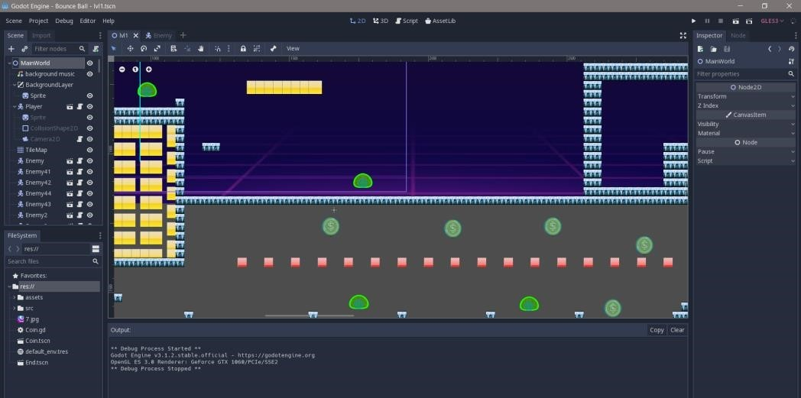
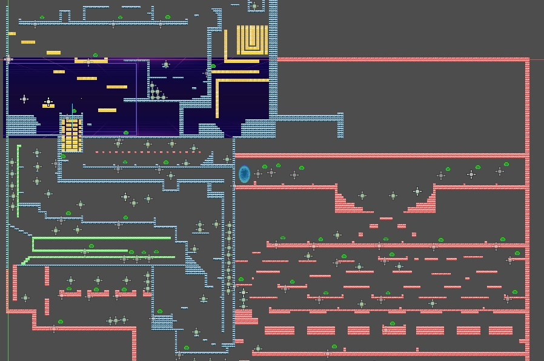

Bounce Ball
Bounce Ball
Game Concept : The game is inspired from BOUNCE game series on Nokia phones. The main character is a ball. The level is traversed by jumping and moving left and right. There are different platforms all around that can be used to jump from one place to another. There are also coins to collect that act as an object of achievement in the game. Basically the whole premises of the game is to reach the end portal as quickly as possible. Once the ball reaches the end portal, the game ends on an ending screen thanking the player to play the game.

OBJECTIVE
To traverse through the entire map and to reach the end of the map and enter a portal that acts as the final escape. These are the directions and areas that are covered throughout the game : i) Game starts initially at the top level of the ledges . ii) The player moves up by jumping onto ledges. iii) Through a pipeline the player reaches the bottom and makes his way up again. iv) The last area is a platformed area with all RED platforms.
THEME
i)PLATFORMER game : The game has platformer elements. The main character of the game is a bouncing football. The player starts from point A in the game. The ball can be moved left and right and it can jump over obstacles and enemies. There are various tilesets in game that have collision detection nodes so that when the player touches those or jumps on them, the character doesn’t fall off.
i) ACTION-ADVENTURE : The action/adventure element of the game can be described from the fact that we need to avoid the obstacles like moving enemies around the map and to jump over them to kill them. So, this explains why the game can belong to the action genre of the game.
